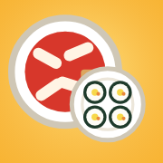

분식집 테스트
모든 맵이 열린 테스트용이에요.
아이폰: 홈 화면에 추가
- 이 화면에서 사파리 공유 버튼을 눌러요. 안 보이면 ⋯ 안에 있어요.
- 홈 화면에 추가를 눌러요. '웹 앱으로 열기' 같은 옵션이 있으면 켜 둔 채로 추가해요.
- 홈 화면에 생긴 분식집 테스트 아이콘으로 들어가요. 주소창 없이, 맵이 다 열린 채로 시작해요.
예전에 추가한 분식집 아이콘이 있으면 지우고 여기서 다시 추가해요. 홈 화면 앱은 사파리랑 기록이 따로 저장돼요.
안드로이드
- 크롬 오른쪽 위 ⋮ 메뉴 → 홈 화면에 추가(또는 앱 설치)를 눌러요.